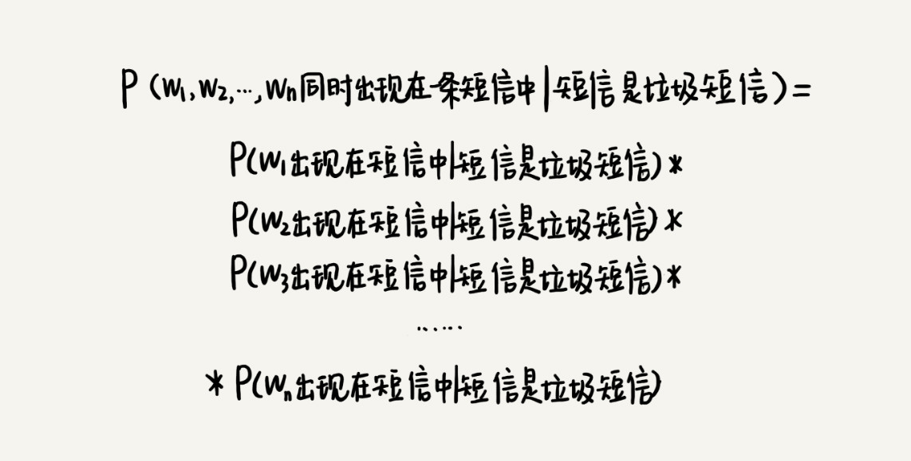

46 | 概率统计：如何利用朴素贝叶斯算法过滤垃圾短信？
上一节我们讲到，如何用位图、布隆过滤器，来过滤重复的数据。今天，我们再讲一个跟过滤相关的问题，如何过滤垃圾短信？
垃圾短信和骚扰电话，我想每个人都收到过吧？买房、贷款、投资理财、开发票，各种垃圾短信和骚扰电话，不胜其扰。如果你是一名手机应用开发工程师，让你实现一个简单的垃圾短信过滤功能以及骚扰电话拦截功能，该用什么样的数据结构和算法实现呢？
算法解析
实际上，解决这个问题并不会涉及很高深的算法。今天，我就带你一块看下，如何利用简单的数据结构和算法，解决这种看似非常复杂的问题。
1. 基于黑名单的过滤器
我们可以维护一个骚扰电话号码和垃圾短信发送号码的黑名单。这个黑名单的搜集，有很多途径，比如，我们可以从一些公开的网站上下载，也可以通过类似“360 骚扰电话拦截”的功能，通过用户自主标记骚扰电话来收集。对于被多个用户标记，并且标记个数超过一定阈值的号码，我们就可以定义为骚扰电话，并将它加入到我们的黑名单中。
如果黑名单中的电话号码不多的话，我们可以使用散列表、二叉树等动态数据结构来存储，对内存的消耗并不会很大。如果我们把每个号码看作一个字符串，并且假设平均长度是 16 个字节，那存储 50 万个电话号码，大约需要 10MB 的内存空间。即便是对于手机这样的内存有限的设备来说，这点内存的消耗也是可以接受的。
但是，如果黑名单中的电话号码很多呢？比如有 500 万个。这个时候，如果再用散列表存储，就需要大约 100MB 的存储空间。为了实现一个拦截功能，耗费用户如此多的手机内存，这显然有点儿不合理。
上一节我们讲了，布隆过滤器最大的特点就是比较省存储空间，所以，用它来解决这个问题再合适不过了。如果我们要存储 500 万个手机号码，我们把位图大小设置为 10 倍数据大小，也就是 5000 万，那也只需要使用 5000 万个二进制位（5000 万 bits），换算成字节，也就是不到 7MB 的存储空间。比起散列表的解决方案，内存的消耗减少了很多。
实际上，我们还有一种时间换空间的方法，可以将内存的消耗优化到极致。
我们可以把黑名单存储在服务器端上，把过滤和拦截的核心工作，交给服务器端来做。手机端只负责将要检查的号码发送给服务器端，服务器端通过查黑名单，判断这个号码是否应该被拦截，并将结果返回给手机端。
用这个解决思路完全不需要占用手机内存。不过，有利就有弊。我们知道，网络通信是比较慢的，所以，网络延迟就会导致处理速度降低。而且，这个方案还有个硬性要求，那就是只有在联网的情况下，才能正常工作。
基于黑名单的过滤器我就讲完了，不过，你可能还会说，布隆过滤器会有判错的概率呀！如果它把一个重要的电话或者短信，当成垃圾短信或者骚扰电话拦截了，对于用户来说，这是无法接受的。你说的没错，这是一个很大的问题。不过，我们现在先放一放，等三种过滤器都讲完之后，我再来解答。
2. 基于规则的过滤器
刚刚讲了一种基于黑名单的垃圾短信过滤方法，但是，如果某个垃圾短信发送者的号码并不在黑名单中，那这种方法就没办法拦截了。所以，基于黑名单的过滤方式，还不够完善，我们再继续看一种基于规则的过滤方式。
对于垃圾短信来说，我们还可以通过短信的内容，来判断某条短信是否是垃圾短信。我们预先设定一些规则，如果某条短信符合这些规则，我们就可以判定它是垃圾短信。实际上，规则可以有很多，比如下面这几个：
- 短信中包含特殊单词（或词语），比如一些非法、淫秽、反动词语等；
- 短信发送号码是群发号码，非我们正常的手机号码，比如 +60389585；
- 短信中包含回拨的联系方式，比如手机号码、微信、QQ、网页链接等，因为群发短信的号码一般都是无法回拨的；
- 短信格式花哨、内容很长，比如包含各种表情、图片、网页链接等；
- 符合已知垃圾短信的模板。垃圾短信一般都是重复群发，对于已经判定为垃圾短信的短信，我们可以抽象成模板，将获取到的短信与模板匹配，一旦匹配，我们就可以判定为垃圾短信。
当然，如果短信只是满足其中一条规则，如果就判定为垃圾短信，那会存在比较大的误判的情况。我们可以综合多条规则进行判断。比如，满足 2 条以上才会被判定为垃圾短信；或者每条规则对应一个不同的得分，满足哪条规则，我们就累加对应的分数，某条短信的总得分超过某个阈值，才会被判定为垃圾短信。
不过，我只是给出了一些制定规则的思路，具体落实到执行层面，其实还有很大的距离，还有很多细节需要处理。比如，第一条规则中，我们该如何定义特殊单词；第二条规则中，我们该如何定义什么样的号码是群发号码等等。限于篇幅，我就不一一详细展开来讲了。我这里只讲一下，如何定义特殊单词？
如果我们只是自己盘脑袋想，哪些单词属于特殊单词，那势必有比较大的主观性，也很容易漏掉某些单词。实际上，我们可以基于概率统计的方法，借助计算机强大的计算能力，找出哪些单词最常出现在垃圾短信中，将这些最常出现的单词，作为特殊单词，用来过滤短信。
不过这种方法的前提是，我们有大量的样本数据，也就是说，要有大量的短信（比如 1000 万条短信），并且我们还要求，每条短信都做好了标记，它是垃圾短信还是非垃圾短信。
我们对这 1000 万条短信，进行分词处理（借助中文或者英文分词算法），去掉“的、和、是”等没有意义的停用词（Stop words），得到 n 个不同的单词。针对每个单词，我们统计有多少个垃圾短信出现了这个单词，有多少个非垃圾短信会出现这个单词，进而求出每个单词出现在垃圾短信中的概率，以及出现在非垃圾短信中的概率。如果某个单词出现在垃圾短信中的概率，远大于出现在非垃圾短信中的概率，那我们就把这个单词作为特殊单词，用来过滤垃圾短信。
文字描述不好理解，我举个例子来解释一下。

3. 基于概率统计的过滤器
基于规则的过滤器，看起来很直观，也很好理解，但是它也有一定的局限性。一方面，这些规则受人的思维方式局限，规则未免太过简单；另一方面，垃圾短信发送者可能会针对规则，精心设计短信，绕过这些规则的拦截。对此，我们再来看一种更加高级的过滤方式，基于概率统计的过滤方式。
这种基于概率统计的过滤方式，基础理论是基于朴素贝叶斯算法。为了让你更好地理解下面的内容，我们先通过一个非常简单的例子来看下，什么是朴素贝叶斯算法？
假设事件 A 是“小明不去上学”，事件 B 是“下雨了”。我们现在统计了一下过去 10 天的下雨情况和小明上学的情况，作为样本数据。

我们来分析一下，这组样本有什么规律。在这 10 天中，有 4 天下雨，所以下雨的概率 P(B)=4/10。10 天中有 3 天，小明没有去上学，所以小明不去上学的概率 P(A)=3/10。在 4 个下雨天中，小明有 2 天没去上学，所以下雨天不去上学的概率 P(A|B)=2/4。在小明没有去上学的 3 天中，有 2 天下雨了，所以小明因为下雨而不上学的概率是 P(B|A)=2/3。实际上，这 4 个概率值之间，有一定的关系，这个关系就是朴素贝叶斯算法，我们用公式表示出来，就是下面这个样子。
朴素贝叶斯算法是不是非常简单？我们用一个公式就可以将它概括。弄懂了朴素贝叶斯算法，我们再回到垃圾短信过滤这个问题上，看看如何利用朴素贝叶斯算法，来做垃圾短信的过滤。
基于概率统计的过滤器，是基于短信内容来判定是否是垃圾短信。而计算机没办法像人一样理解短信的含义。所以，我们需要把短信抽象成一组计算机可以理解并且方便计算的特征项，用这一组特征项代替短信本身，来做垃圾短信过滤。
我们可以通过分词算法，把一个短信分割成 n 个单词。这 n 个单词就是一组特征项，全权代表这个短信。因此，判定一个短信是否是垃圾短信这样一个问题，就变成了，判定同时包含这几个单词的短信是否是垃圾短信。
不过，这里我们并不像基于规则的过滤器那样，非黑即白，一个短信要么被判定为垃圾短信、要么被判定为非垃圾短息。我们使用概率，来表征一个短信是垃圾短信的可信程度。如果我们用公式将这个概率表示出来，就是下面这个样子：
尽管我们有大量的短信样本，但是我们没法通过样本数据统计得到这个概率。为什么不可以呢？你可能会说，我只需要统计同时包含 W1W1，W2W2，W3W3，…，WnWn 这 n 个单词的短信有多少个（我们假设有 x 个），然后看这里面属于垃圾短信的有几个（我们假设有 y 个），那包含 W1W1，W2W2，W3W3，…，WnWn 这 n 个单词的短信是垃圾短信的概率就是 y/x。
理想很丰满，但现实往往很骨感。你忽视了非常重要的一点，那就是样本的数量再大，毕竟也是有限的，样本中不会有太多同时包含 W1W1，W2W2，W3W3，…，WnWn 的短信的，甚至很多时候，样本中根本不存在这样的短信。没有样本，也就无法计算概率。所以这样的推理方式虽然正确，但是实践中并不好用。
这个时候，朴素贝叶斯公式就可以派上用场了。我们通过朴素贝叶斯公式，将这个概率的求解，分解为其他三个概率的求解。你可以看我画的图。那转化之后的三个概率是否可以通过样本统计得到呢？

P（W1W1，W2W2，W3W3，…，WnWn 同时出现在一条短信中 | 短信是垃圾短信）这个概率照样无法通过样本来统计得到。但是我们可以基于下面这条著名的概率规则来计算。
独立事件发生的概率计算公式：P(AB) = P(A)P(B)
如果事件 A 和事件 B 是独立事件，两者的发生没有相关性，事件 A 发生的概率 P(A) 等于 p1，事件 B 发生的概率 P(B) 等于 p2，那两个同时发生的概率 P(AB) 就等于 P(A)P(B)。
基于这条独立事件发生概率的计算公式，我们可以把 P（W1，W2，W3，…，Wn 同时出现在一条短信中 | 短信是垃圾短信）分解为下面这个公式：

其中，P（WiWi 出现在短信中 | 短信是垃圾短信）表示垃圾短信中包含 WiWi 这个单词的概率有多大。这个概率值通过统计样本很容易就能获得。我们假设垃圾短信有 y 个，其中包含 WiWi 的有 x 个，那这个概率值就等于 x/y。
P（W1W1，W2W2，W3W3，…，WnWn 同时出现在一条短信中 | 短信是垃圾短信）这个概率值，我们就计算出来了，我们再来看下剩下两个。
P（短信是垃圾短信）表示短信是垃圾短信的概率，这个很容易得到。我们把样本中垃圾短信的个数除以总样本短信个数，就是短信是垃圾短信的概率。
不过，P（W1W1，W2W2，W3W3，…，WnWn 同时出现在一条短信中）这个概率还是不好通过样本统计得到，原因我们前面说过了，样本空间有限。不过，我们没必要非得计算这一部分的概率值。为什么这么说呢？
实际上，我们可以分别计算同时包含 W1W1，W2W2，W3W3，…，WnWn 这 n 个单词的短信，是垃圾短信和非垃圾短信的概率。假设它们分别是 p1 和 p2。我们并不需要单纯地基于 p1 值的大小来判断是否是垃圾短信，而是通过对比 p1 和 p2 值的大小，来判断一条短信是否是垃圾短信。更细化一点讲，那就是，如果 p1 是 p2 的很多倍（比如 10 倍），我们才确信这条短信是垃圾短信。

基于这两个概率的倍数来判断是否是垃圾短信的方法，我们就可以不用计算 P（W1W1，W2W2，W3W3，…，WnWn 同时出现在一条短信中）这一部分的值了，因为计算 p1 与 p2 的时候，都会包含这个概率值的计算，所以在求解 p1 和 p2 倍数（p1/p2）的时候，我们也就不需要这个值。
总结引申
今天，我们讲了基于黑名单、规则、概率统计三种垃圾短信的过滤方法，实际上，今天讲的这三种方法，还可以应用到很多类似的过滤、拦截的领域，比如垃圾邮件的过滤等等。
在讲黑名单过滤的时候，我讲到布隆过滤器可能会存在误判情况，可能会导致用户投诉。实际上，我们可以结合三种不同的过滤方式的结果，对同一个短信处理，如果三者都表明这个短信是垃圾短信，我们才把它当作垃圾短信拦截过滤，这样就会更精准。
当然，在实际的工程中，我们还需要结合具体的场景，以及大量的实验，不断去调整策略，权衡垃圾短信判定的准确率（是否会把不是垃圾的短信错判为垃圾短信）和召回率（是否能把所有的垃圾短信都找到），来实现我们的需求。
课后思考
关于垃圾短信过滤和骚扰电话的拦截，我们可以一块儿头脑风暴一下，看看你还有没有其他方法呢？